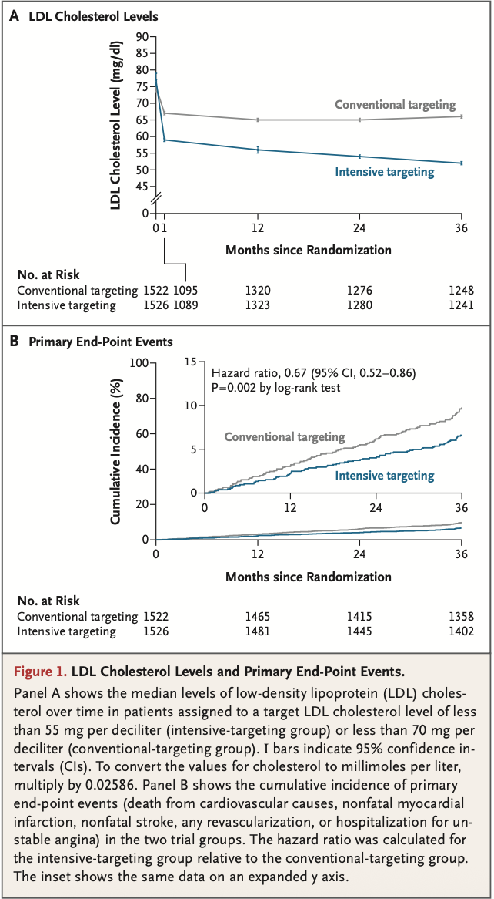
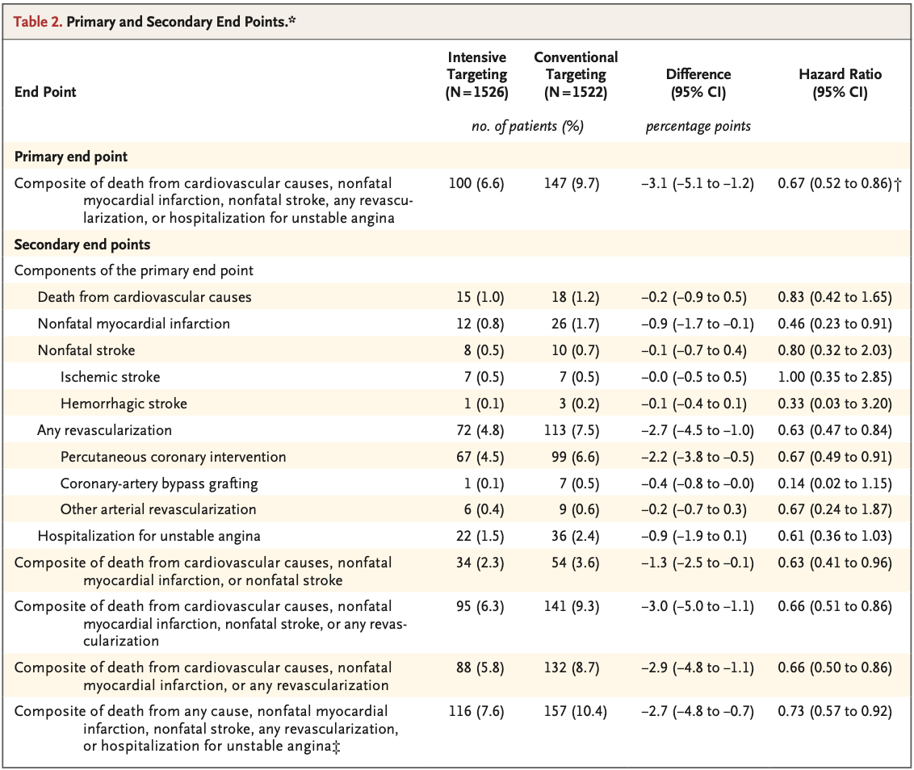

primary endpoint
- 심혈관 원인에 의한 사망, 비치명적 심근경색, 비치명적 뇌졸중, 모든 재관류 또는 불안정 협심증에 대한 입원을 복합적으로 구성
lowering the target LDL cholesterol level
ASCVD 환자에서 LDL-C <55 mg/dL을 목표로 하는 것이 <70 mg/dL 목표보다 심혈관 사건의 발생 위험을 감소시키는지 평가
| 구분 | 요약 |
|---|---|
| Population | ASCVD가 확인된 19–80세 환자 |
| Intervention | LDL-C 목표 <55 mg/dL |
| Comparison | LDL-C 목표 <70 mg/dL |
| Outcome | 주요 심혈관 사건 |
| Follow-up | 3년 |
permuted-block randomization
(with mixed blocks of 4 or 6)
효능: primary endpoint의 개별 구성 요소, 심혈관 원인에 의한 사망, 비치명성 심근경색 또는 비치명성 뇌졸중을 포함한 추가 사전 지정 복합 endpoint
안전성: 신규 발병 당뇨병, 혈당 조절 악화, 스타틴 관련 근육 증상으로 인해 치료 용량이나 요법 변경, 암 진단, 백내장 수술, 아미노전이효소, 크레아티닌 또는 크레아틴 키나제 수치 상승
| 항목 | 설정 |
|---|---|
| power(검정력) | 80% |
| alpha(양측 유의수준) | 0.05 |
| 예상효과 | 상대위험 24.75% 감소 |
| 대조군 사건 발생률 | 3년 동안 15% |
| 예상 추적 손실률 | 15% |
P=0.92)| 결과 | Intensive | Conventional |
|---|---|---|
| LDL-C 중앙값 | 56 mg/dL | 66 mg/dL |
| 3년 누적 발생률 | 6.6% | 9.7% |


ASCVD 환자에서 LDL-C <55 mg/dL 목표 전략은 <70 mg/dL 전략보다 3년 심혈관 사건을 감소시켰으며, 뚜렷한 안전성 손실은 발견되지 않았다.